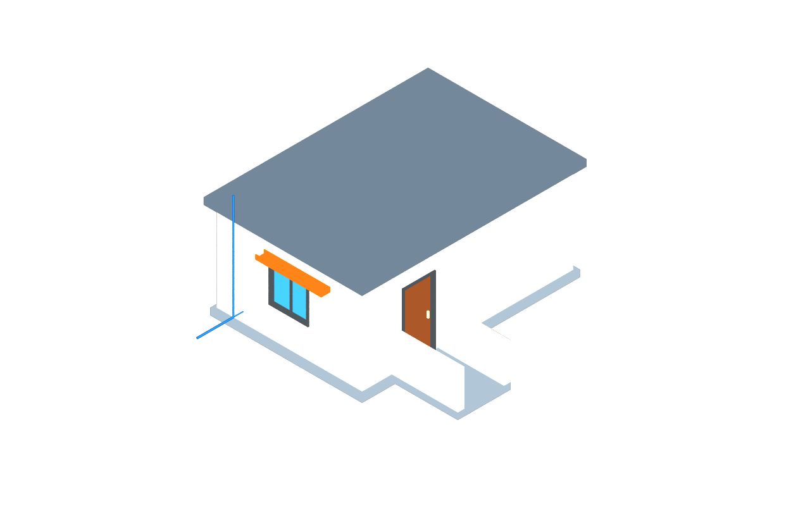

Overview¶
The usdAeco schema domain contains schemas for describing the built environment: the sites, facilities, levels and spaces of a built thing, the elements inside them, and the identity, classification, grouping and connectivity those elements share. usdAeco is designed to carry the semantics every dataset about a built thing needs, in a small, codeless form that composes on any OpenUSD runtime.
usdAeco is the core of a suite of AECO schema domains. This guide covers the core only. Everything a downstream domain adds — path drivers, layered sections, walls, pipes, cameras, programmes, host synchronization — is deliberately kept out of the core and is described in its own guide. See The Core and the Other Domains for how the two relate and what the core does not contain.

usdAeco Schemas and Concepts¶
usdAeco includes several schemas that provide the following features:
- Mark a stage as an AECO project
- Represent the spatial structure (e.g. AecoLevel, AecoSpace)
- Endow element capabilities
- Classify prims against external dictionaries
- Represent catalog types and their occurrences
- Represent groups: systems and zones
- Represent connectivity with ports
- Mark derived geometry
Each of these is described in the following sections.
Marking a Project¶
The AecoProjectAPI schema is applied to the root model prim of a
stage and marks it as an AECO project, carrying the project name and a stable project identifier.
Units and up axis remain UsdGeom stage metrics (metersPerUnit, upAxis).
The schema deliberately carries nothing else: conventions that only matter to a downstream
domain, such as a calendar epoch for 4D views, are declared by that domain's own root schema.
def Xform "SmallProject" (
prepend apiSchemas = ["AecoProjectAPI"]
kind = "assembly"
)
{
string aeco:project:id = "22de894f-1a16-5d9b-82f4-988837ce6db1"
string aeco:project:name = "Schema Demo House"
}Representing the Spatial Structure¶
usdAeco provides five typed schemas that represent the spatial structure of a built thing:
AecoSite, AecoFacility,
AecoFacilityPart, AecoLevel and
AecoSpace. All five derive from
AecoSpatialBase, which in turn derives from Xformable, so that
every spatial container can be transformed like any Xformable prim and carries a stable
identity (aeco:id) and a lifecycle phase (aeco:phase).
Containment is the USD namespace: a prim's container is its nearest spatial ancestor. Organizational Scopes and Xforms may sit in between and are invisible to the containment rules. Which spatial prims may contain which is a four-rule grammar, with recursion at every type:
site ⊃ { site, facility, space }
facility ⊃ { part, space }
part ⊃ { part, space } (a level is a part)
space ⊃ { space }Note that a facility may not contain another facility: a podium with two towers is one AecoFacility whose major divisions are AecoFacilityParts, and separately operated assets are sibling facilities related by systems and references. AecoLevel derives from AecoFacilityPart, so a level may contain a level (a mezzanine), and it carries the one property every vertical facility shares, its datum elevation. The following example is the top of a campus with a podium development, taken from the hard-cases example stage.
def AecoSite "Campus"
{
def AecoSite "ParcelNorth"
{
def AecoFacility "Development" (
prepend apiSchemas = ["AecoClassificationAPI:ifc"]
)
{
string aeco:class:ifc:code = "IfcBuilding"
def AecoFacilityPart "Podium"
{
def AecoLevel "L0"
{
double aeco:elevation = 0
def AecoSpace "Lobby" { }
def AecoLevel "Mezzanine"
{
double aeco:elevation = 2.1
}
}
}
def AecoFacilityPart "TowerA" { }
def AecoSpace "Atrium" { }
}
def AecoSpace "Plaza" { }
}
}The kind of a spatial prim — building or road, wing or road section, room or plaza
— is never a subtype. It is classification, exactly as for elements (see
Classifying Prims). There is no AecoBuilding: a building is an
AecoFacility classified as one, and a road is an AecoFacility classified as IfcRoad
whose sections are AecoFacilityParts. Type is structure; kind is data.
| Schema | Represents | Fallback type |
|---|---|---|
| AecoSite | An area of land or water under development; sites nest (campus ⊃ parcels) | Xform |
| AecoFacility | One built asset operated as a whole: a building, bridge, road, tunnel, plant | Xform |
| AecoFacilityPart | A structural subdivision of a facility: wing, tower, podium, road section; concrete and recursive | Xform |
| AecoLevel | The one universal part: a horizontal stratum at a datum elevation | Xform |
| AecoSpace | A bounded usable region, interior or exterior: room, hall, yard, atrium, plaza; spaces nest | Xform |
Endowing Element Capabilities¶
The AecoElementAPI schema imparts "element capabilities" to the
prim it is applied to, so the prim can be treated as being a built element. The schema can be
applied to any Imageable prim — an Xform, a Mesh, a referenced asset — and gives it a
stable identity (aeco:id), a lifecycle phase (aeco:phase) and optional
secondary spatial anchors (aeco:referencedContainers). usdAeco provides no typed
element hierarchy: what an element is comes from classification.
def Xform "WallPartition" (
prepend apiSchemas = ["AecoElementAPI", "AecoClassificationAPI:ifc"]
)
{
string aeco:id = "59c47682-097a-5121-b9ae-ec35085e206f"
uniform token aeco:phase = "proposed"
string aeco:class:ifc:code = "IfcWall.PARTITIONING"
string aeco:class:ifc:name = "Wall (partitioning)"
}An element is where the containment grammar stops. Below an element, namespace is assembly
structure, not spatial containment: a door nested inside a curtain-wall element is legal and
ordinary, and containment queries see through element subtrees to the nearest spatial
ancestor. An element that spans containers beyond its own — a riser serving upper levels,
a skybridge reaching the other tower, a culvert serving the adjacent road section — lists
them in aeco:referencedContainers, authored on the element by the discipline that
owns it.
def Xform "SkyBridge" (
prepend apiSchemas = ["AecoElementAPI", "AecoClassificationAPI:ifc"]
)
{
string aeco:id = "07ef25f4-da8b-50bd-b1a5-49677c74d3df"
string aeco:class:ifc:code = "IfcElementAssembly.USERDEFINED"
prepend rel aeco:referencedContainers = </Metro/Campus/ParcelNorth/Development/Parts/TowerB/B_L1>
}A spatial prim or a port that itself wears AecoElementAPI is a validator error: containers, ports and elements are referents of different kinds.
Classifying Prims¶
The AecoClassificationAPI schema is a multiple-apply
schema that binds a prim to one entry of one external classification system. Each instance is
named for its system and contributes a code, a name and a resolvable
uri under the aeco:class:<system>: namespace. Several instances
per prim are normal and expected.
class "ExternalCavityWall" (
prepend apiSchemas = ["AecoTypeAPI", "AecoClassificationAPI:uniclass", "AecoClassificationAPI:ifc"]
)
{
string aeco:class:ifc:code = "IfcWall.SOLIDWALL"
string aeco:class:ifc:name = "Wall (solid)"
string aeco:class:ifc:uri = "https://identifier.buildingsmart.org/uri/buildingsmart/ifc/4.3/class/IfcWall"
string aeco:class:uniclass:code = "Ss_25_10_20"
string aeco:class:uniclass:name = "Wall systems"
string aeco:class:uniclass:uri = "https://uniclass.thenbs.com/taxon/ss_25_10_20"
}Classification is the only kind mechanism in the core. It applies to elements,
spatial prims, groups and catalog types alike: the kind of a facility (IfcRoad),
of a system (IfcDistributionSystem.CHILLEDWATER) and of a wall
(IfcWall.PARTITIONING, Ss_25_10_20) all ride the same mechanism.
usdAeco carries no census token or taxonomy of its own, so "all walls" is one query in whichever
dictionary the data uses, and nothing in the core needs re-mapping when a dictionary revises.
The IFC entity is the recommended default system because every authoring tool can emit it; the
code form is the entity name, then the PredefinedType after a dot when one is set.
Instance names are governed tokens from the classification_systems registry
(ifc, uniclass, omniclass, uniformat,
masterformat, etim, bsdd), so two tools name the same
dictionary the same way. Validators warn on an unknown system, on an empty code, and on
elements with no classification at all or classified only as a proxy — the measurable
version of proxy abuse.
Representing Types and Occurrences¶
The AecoTypeAPI schema marks a class prim as a catalog type —
a product or type definition — and carries product identity: manufacturer, model and
catalog URI. Occurrences compose the type through an inherits arc, so
type/occurrence is USD composition: edits to the type broadcast to every occurrence,
and an occurrence's own opinions override the type's by composition strength. No relationship
needs chasing; attr.Get() on the occurrence is already right.
class "_TypeCatalog"
{
class "ExternalCavityWall" (
prepend apiSchemas = ["AecoTypeAPI", "AecoClassificationAPI:ifc"]
)
{
string aeco:class:ifc:code = "IfcWall.SOLIDWALL"
string aeco:type:manufacturer = "Example Masonry Ltd"
string aeco:type:model = "Cavity wall 300 (102.5 / 100 / 100)"
}
}
def Xform "WallNorth" (
prepend apiSchemas = ["AecoElementAPI"]
prepend inherits = </_TypeCatalog/ExternalCavityWall>
)
{
# Resolves aeco:class:ifc:code and aeco:type:model from the type.
string aeco:id = "e1337f59-b0e2-5dd0-8474-c578c5b0afbd"
}Applied schemas compose through inherits too, so the occurrence resolves the type's
manufacturer as its own (correct: the manufacturer of the type is the manufacturer of every
occurrence). Enumerate the catalog over class prims (Usd.PrimIsAbstract),
not over HasAPI alone. Identity stays on the occurrence: a type prim never carries
an aeco:id.
Representing Groups: Systems and Zones¶
usdAeco provides two typed schemas that overlay groups on the spatial structure.
AecoSystem represents a functional service network — a piping
run, an air loop, a circuit, a structural frame — the logical view of a service, distinct
from its spatially placed members. AecoZone represents a purpose
grouping — a fire compartment, an HVAC zone, a security zone, a department. Both derive
from AecoGroupBase, which carries an identity and a built-in
members collection (CollectionAPI:members, expansion rule
explicitOnly by fallback). A group is its members plus an identity: membership
never changes where a thing is, and anything may belong to any number of groups.
def AecoSystem "DomesticColdWater" (
prepend apiSchemas = ["AecoClassificationAPI:ifc"]
displayName = "Domestic Cold Water"
)
{
string aeco:id = "e9f6b301-f133-5f40-82b8-95a349687722"
string aeco:class:ifc:code = "IfcDistributionSystem.DOMESTICCOLDWATER"
prepend rel aeco:serves = </SmallProject/Site/Building>
prepend rel collection:members:includes = [
</SmallProject/Site/Building/Level1/CWEntry>,
</SmallProject/Site/Building/Level1/CWRiser>,
</SmallProject/Site/Building/Level2/Bathroom/CWBranch>,
</SmallProject/Site/Building/Level2/Bathroom/Basin>,
]
}
def AecoZone "FireCompartmentFC1" (
prepend apiSchemas = ["AecoClassificationAPI:ifc"]
displayName = "Fire compartment FC1"
)
{
string aeco:id = "1ec53345-e096-599c-8bf1-194eb5e39d97"
string aeco:class:ifc:code = "IfcSpatialZone.FIRESAFETY"
prepend rel collection:members:includes = [
</Metro/Campus/ParcelNorth/Development/Parts/Podium/L0/Lobby>,
</Metro/Campus/ParcelNorth/Development/Parts/TowerA/A_L2/Bathroom>,
]
}AecoSystem adds aeco:serves, the spatial prims or zones a service reaches. This
is coarser than member connectivity and valid before any pipe is drawn: a cold water system
serves a building at concept stage. The kind of a group is classification, and its human label
is the prim's displayName metadata. A group carries no status, owner or
title-as-data; those are statements about a group and belong to a downstream domain.
Zones may overlap freely and never nest spatially; when a zone needs a volumetric extent, that
extent is an AecoSpace at its natural place in the tree, grouped by the zone.
A plain selection set needs no AECO type at all: a CollectionAPI instance on any
prim is USD's own grouping. Downstream domains refine systems and zones with applied schemas
that declare apiSchemaCanOnlyApplyTo = ["AecoSystem"] or
["AecoZone"]; nothing subclasses them.
Representing Connectivity with Ports¶
The AecoPort schema represents a typed connection point on an element.
A port is authored as a child prim, so it has a transform (the physical connection location) and
can be targeted by relationships. Ports carry a medium (pipe, duct,
cable, cableCarrier, wireless, other), a
flow direction (source, sink, bidirectional) and the
symmetric aeco:connectedPorts relationship, authored on both ends.
def Xform "CWEntry" (
prepend apiSchemas = ["AecoElementAPI", "AecoClassificationAPI:ifc"]
)
{
string aeco:id = "ab096698-1b91-5c84-810c-5150bea6d9ce"
string aeco:class:ifc:code = "IfcPipeSegment.RIGIDSEGMENT"
def AecoPort "Out"
{
string aeco:id = "d3356492-f76a-5470-9e37-b81f9d7bf4cc"
uniform token aeco:medium = "pipe"
uniform token aeco:flowDirection = "source"
prepend rel aeco:connectedPorts = </SmallProject/Site/Building/Level1/CWRiser/In>
double3 xformOp:translate = (-3.5, 1.4, 0.5)
uniform token[] xformOpOrder = ["xformOp:translate"]
}
}Ports have purpose = guide by fallback, so vanilla viewers hide them unless
guides are shown; this is safe because ports carry no renderable children.
undefined is a wildcard for both medium and flow direction: the validators refuse
only stated incompatibilities — a pipe port connected to a cable port, a source
connected to a source — and flag asymmetric or dangling links. The core defines no
connection entities and no shading-style attribute connections: dataflow is not physical
topology.
Marking Derived Geometry¶
usdAeco adds no geometry schema. Geometry is ordinary UsdGeom — a Cube, a Cylinder, a
Mesh, a BasisCurves — authored as a child of the referent it stands for, and the
AecoDerivedGeometryAPI schema marks it as derived:
which referent it pictures (aeco:derived:source repeats the referent's
aeco:id), what it is a picture of (aeco:derived:role), how faithful it
is (aeco:derived:approx), which tool produced it (aeco:derived:stamp),
which other representation it was derived from (aeco:derived:from) and the
tolerance the derivation honoured (aeco:derived:tolerance, in metres).
def Xform "WallNorth" (
prepend apiSchemas = ["AecoElementAPI"]
)
{
string aeco:id = "e1337f59-b0e2-5dd0-8474-c578c5b0afbd"
def BasisCurves "Axis" (
prepend apiSchemas = ["AecoDerivedGeometryAPI"]
)
{
string aeco:derived:source = "e1337f59-b0e2-5dd0-8474-c578c5b0afbd"
uniform token aeco:derived:role = "axis"
uniform token aeco:derived:approx = "exact"
string aeco:derived:stamp = "small building 0.9.2"
double aeco:derived:tolerance = 0.000001
uniform token purpose = "guide"
uniform token type = "linear"
int[] curveVertexCounts = [2]
point3f[] points = [(-3.2, 2.1, 0.2), (3.2, 2.1, 0.2)]
}
def Cube "Geom" (
prepend apiSchemas = ["AecoDerivedGeometryAPI"]
)
{
string aeco:derived:source = "e1337f59-b0e2-5dd0-8474-c578c5b0afbd"
uniform token aeco:derived:role = "body"
uniform token aeco:derived:approx = "exact"
string aeco:derived:stamp = "small building 0.9.2"
double aeco:derived:tolerance = 0.000001
double size = 1
double3 xformOp:scale = (6.4, 0.2, 2.7)
double3 xformOp:translate = (0, 2.1, 1.55)
uniform token[] xformOpOrder = ["xformOp:translate", "xformOp:scale"]
}
}| Role | What the gprim is a picture of | Required purpose |
|---|---|---|
body | The element's body (the fallback) | render |
proxy | A lightweight stand-in for the body | proxy |
axis | The element's axis or centreline | guide |
footprint, symbol | A plan footprint; a schematic symbol | — |
extent | A spatial container's volume — never an obstacle | guide |
sector, coverage | An analytic view sector; analytic clipped coverage | guide |
wireframe | Edges extracted from an exact body | guide |
Two rules make exactness honest. A Mesh is never approx = exact, because a
tessellation cannot be; exact bodies are analytic UsdGeom primitives (Cube, Cylinder, Sphere,
Cone, Capsule) or a BrepArray carried by a kit outside the core, and a Mesh twin links its
exact source through aeco:derived:from. And an exact representation declares a
positive tolerance; a missing one warns. The other approximation tokens are
driverEval (a stage-side evaluation of the element's drivers, before host joins and
clips), tessellated, arcSegmented, defaultDims and
bbox.
Geometry flows out of authoring hosts and stage-side derivations into their own layers. The core never presents a mesh as editing input, and the drivers that produce geometry — axes, sections, joins, openings — live in downstream domains, not here.
Identity¶
Every referent in usdAeco carries one identity attribute, aeco:id. Spatial prims,
elements, groups and ports share a single uniqueness space, enforced per stage by a validator; a
lowercase hyphenated UUID is recommended. aeco:id is the interchange join key:
census, diffing, issue anchoring and FM inventories join on it across every route. It is the
counterpart of IFC's GlobalId, which encodes the same 128-bit UUID in 22 characters:
aeco_id = str(uuid.UUID(hex=ifcopenshell.guid.expand(global_id)))
global_id = ifcopenshell.guid.compress(uuid.UUID(aeco_id).hex)Because containment is namespace, restructuring a tree moves paths, and path-anchored
relationships in federated layers can dangle. Identity on every container, group and element
makes the repair mechanical: the companion repath tool re-anchors dangling targets
by aeco:id, with longest-prefix remapping so the ports and nested prims under a
moved element follow it. Repairs compose as opinions in a stronger layer without touching the
stale one. There is no alternative identity attribute and no equivalence property; several
exports of the same referent compose opinions on one aeco:id.
Phase and Time¶
aeco:phase is the asset clock: which world a referent belongs to with respect to
this project — proposed, existing, demolished or
temporary. It sits on elements and spatial prims alike, so a renovation models the
existing fabric and the proposed remodel in one structure:
def AecoFacilityPart "WingB"
{
uniform token aeco:phase = "existing"
def AecoLevel "L1"
{
uniform token aeco:phase = "existing"
def AecoSpace "Office"
{
uniform token aeco:phase = "existing"
def Xform "Partition1" (prepend apiSchemas = ["AecoElementAPI"])
{
uniform token aeco:phase = "demolished"
}
def Xform "Partition2" (prepend apiSchemas = ["AecoElementAPI"])
{
uniform token aeco:phase = "proposed"
}
}
}
}Phase is not status: it names which world a referent belongs to, not where a workflow stands.
The core carries no date at all. Information time — what was said when — is
layers and layer metadata, which USD already provides; work time — when work happens
— belongs to record prims in a downstream domain, and neither is ever encoded as
UsdTimeCode samples. Design options are a VariantSet on the spatial
referent: a representation choice on one state, never a clock.
Composing Without Plugins¶
A usdAeco stage remains an ordinary USD stage. Every stage authors
fallbackPrimTypes for the core types it uses, so a runtime with no AECO plugins
installed composes an AecoLevel as an Xform and an AecoSystem as a Scope, with identical
transforms and legible data:
#usda 1.0
(
defaultPrim = "SmallProject"
metersPerUnit = 1
upAxis = "Z"
fallbackPrimTypes = {
token[] AecoSite = ["Xform"]
token[] AecoFacility = ["Xform"]
token[] AecoFacilityPart = ["Xform"]
token[] AecoLevel = ["Xform"]
token[] AecoSpace = ["Xform"]
token[] AecoPort = ["Xform"]
token[] AecoSystem = ["Scope"]
token[] AecoZone = ["Scope"]
}
)Applied schemas compose without the plugin as well; their properties simply appear as authored
attributes. Renderers install nothing. The usdAeco plugin itself is codeless —
plugInfo.json plus generatedSchema.usda — and registers one
property metadatum, aecoDerived, which downstream schemas use to declare a property
as host-reported rather than editor-authored.
Standardized and Ad-hoc Properties¶
Properties have two tiers and no third place. Standardized properties are schema attributes
— of the core in the aeco: namespace, or of a downstream domain in its own
aeco:<library>: namespace — with documentation, SI-fixed units, fallbacks
and allowed tokens. Ad-hoc data lives only under aeco:props:<Set>:<name>,
where the set name comes from a sanctioned group in the prop_sets registry
(Pset_*, Qto_*, Ifc*, source):
double aeco:props:Pset_PipeSegmentTypeCommon:NominalDiameter = 25The quarantine is deliberately open: any tool may stash namespaced data there without a schema change, and conformance reports which sets a stage uses. Governed and project data stay mechanically distinguishable, and a generic viewer can display unknown sets safely.
Validation¶
usdAeco ships eight UsdValidation validators under the UsdAecoValidators keyword.
Universal rules error; sector-contextual rules warn. A conformance profile is a JSON
document that re-grades named rules for a sector or an exchange
("unclassifiedElement": "error"); profiles never add rules, only harden them.
| Validator | Rules (error unless marked warn) |
|---|---|
| IdentityChecker | missingId (elements; warn elsewhere), malformedId (warn), duplicateId |
| SpatialGrammarChecker | facilityInFacility, badSpatialNesting, spatialIsElement, portIsElement; unanchoredSpatial, spatialInsideElement, levelWithoutElevation, elevationDrift (warn) |
| ClassificationChecker | unclassifiedElement, emptyClassificationCode, unregisteredClassificationSystem, proxyClassified (all warn) |
| PortConnectivityChecker | danglingPortLink, asymmetricPortLink, incompatibleFlow, mediumMismatch |
| GroupChecker | zoneAuthorsServes, servesTargetsNonSpatial, danglingMember (warn) |
| DerivedGeometryChecker | derivedGeometryOrphan, derivedGeometryRole, derivedGeometryPurpose (warn) |
| DerivedExactOnMeshChecker | DerivedExactOnMesh: a Mesh cannot declare approx = exact |
| ExactWithoutToleranceChecker | ExactWithoutTolerance: an exact representation without a positive, finite tolerance (warn) |
The Core and the Other Domains¶
usdAeco is closed and small: five spatial types, two group types, one port type, two abstract bases and five applied schemas. A consumer that knows these can traverse an entire built thing and will never meet another core structure. Everything else in the suite is a separate schema domain that applies to core prims and never subclasses them. The core has no dependencies; every other domain depends on the core; and the dependencies form a tiered graph whose edges point strictly toward the more generic tier.
Each tier depends only on the tiers below it. A kind library never depends on another kind library; cross-kind rules live in validation, keeping the graph acyclic. dashed chips are integrations and tooling, which ship no schemas of their own.
The clearest way to read the boundary is by what the core refuses to hold. Each item below is real and needed; it is simply owned by another domain, so that the core stays reviewable in an afternoon and never accumulates a vocabulary it would have to maintain.
| Not in the core | Where it lives |
|---|---|
| Geometry drivers: axes, layered sections, joins, openings, nominal sizes | usdAecoAxis and usdAecoBuildUp (section tier); usdAecoWall, usdAecoPipe (kind tier) |
| Exact bodies: BrepArray, kernel evaluation, measured clearances | usdSolid and usdSolidOcct (shared kits outside the suite); usdaeco-solid |
| Cameras and coverage; clash evidence; programmes and 4D playback; repeated-floor drift; requirement checks | usdAecoCctv, usdAecoClash, usdAecoPlan, usdAecoRepeat, usdAecoCompliance |
| Host synchronization: intent layers, solved results, diagnostics, refusal reasons | usdAecoSync, with usdaeco-ifc, usdaeco-revit and usdaeco-bonsai as hosts |
| Register rows: status, owner, title-as-data, documents, cost, dates | The record tier, as applied statements about core referents |
| A kind vocabulary: element categories, facility subtypes, system types | Nowhere in the suite — kind is always an external classification |
| Datums, grids, alignments, geodetic anchoring | Open; deferred to OpenUSD's own geospatial and future work |
| Materials, lighting, physics, rendering | The existing OpenUSD domains, which AECO schemas only reference |
A downstream domain is conformant when it follows the extension contract, which a schema review can check in the library itself:
- Extend vocabulary, never structure. Add applied schemas freely; add typed prims only for genuinely new referents; never subclass AecoSpatialBase or AecoGroupBase; never add a second containment, grouping, connectivity or identity mechanism.
- Decorate, never capture. Attach semantics in your own
aeco:<library>:namespace; never retype or reparent another discipline's prims. - Kind via classification only. No typed prim, parallel enum or census token per product kind.
- Groups through the core, connectivity through ports. Refinement is an applied schema with
apiSchemaCanOnlyApplyTodeclared. - One identity.
aeco:ideverywhere; per-occurrence, never on type prims. - Drivers in, derived out. Editors author drivers; hosts and derivations write derived values into their own layers; a derived property is declared with the
aecoDerivedmetadatum in the schema, never in stage data. - Semantics only. Geometry, materials, physics, lighting and rendering belong to the existing USD domains.
- Ship conformant. Codeless build, declared core-version conformance, registered tokens, application restrictions authored, the shared validation suite green on a submitted example.
The following table lists the schema domains of the suite as of this writing, with the domains each requires. Each will have a guide of its own; none of them is part of usdAeco.
| Domain | Tier | Adds | Requires |
|---|---|---|---|
| usdAeco | core | Identity, spatial structure, classification, groups, ports, catalog inheritance, phase, the derived-geometry mark | — |
| usdAecoAxis | section | Line and circular-arc path drivers for walls, pipes and beams; derived guide curves | usdAeco |
| usdAecoBuildUp | section | Layered sections shared by walls, floors, roofs and ceilings, owned by catalog classes | usdAeco |
| usdAecoWall | kind | Wall drivers: axis, section, joins and openings; bodies from the authoring kernel | usdAeco, Axis, BuildUp |
| usdAecoPipe | kind | Pipe drivers, catalogs and connected fittings with ports | usdAeco, Axis |
| usdAecoCctv | kind | Camera drivers and coverage derivations over the built thing | usdAeco |
| usdAecoClash | kind | Mesh and exact clash evidence with measured uncertainty | usdAeco |
| usdAecoPlan | kind | Programmes, workspace checks and derived 4D playback | usdAeco |
| usdAecoRepeat | kind | Repeated floors, explicit drift and measured quantities | usdAeco, BuildUp, Axis |
| usdAecoCompliance | kind | Requirements measured against the built model | usdAeco |
| usdaeco-solid | kind | Exact bodies with ordinary USD proxy twins | usdAeco, usdaeco-ifc, usdSolid, usdSolidOcct |
| usdAecoSync | record | Edit drivers in an intent layer; a host solves; results and diagnostics are published separately | usdAeco, Axis |
Schema Classes¶
Every property of the core, with its USD type and fallback. The authoritative source is
usdAeco/schema.usda, whose doc strings carry the reasoning. Lengths are stage linear
units unless stated; ° marks an abstract type, never serialized in a stage.
AecoSpatialBase °
| Property | USD type | Fallback | Description |
|---|---|---|---|
aeco:id | string | "" | Stable, globally unique identity; shares one uniqueness space with elements, groups and ports. |
aeco:phase | uniform token | proposed | Lifecycle phase with respect to this project: proposed, existing, demolished, temporary. |
AecoSite
AecoFacility
AecoFacilityPart
AecoLevel
| Property | USD type | Fallback | Description |
|---|---|---|---|
aeco:elevation | double | 0 | Declarative datum elevation in the frame of the nearest ancestor facility, along the stage up axis. Placement remains xformOps; a validator warns when the two diverge. |
AecoSpace
AecoGroupBase °
| Property | USD type | Fallback | Description |
|---|---|---|---|
aeco:id | string | "" | Stable unique identity; groups are addressable artifacts. |
collection:members:expansionRule | uniform token | explicitOnly | Membership is exactly the targeted prims; authors may opt into expandPrims or a membership expression per group. |
AecoSystem
| Property | USD type | Fallback | Description |
|---|---|---|---|
aeco:serves | rel | — | The spatial prims and/or zones this system functionally serves; valid without any modeled connectivity. |
AecoZone
AecoPort
| Property | USD type | Fallback | Description |
|---|---|---|---|
purpose | uniform token | guide | Fallback override of the Imageable purpose: ports hide in vanilla viewers unless guides are shown. |
aeco:id | string | "" | Stable unique identity for commissioning and fabrication records. |
aeco:medium | uniform token | undefined | What passes or connects at this port: pipe, duct, cable, cableCarrier, wireless, other, undefined. |
aeco:flowDirection | uniform token | undefined | Flow relative to the owning element: source, sink, bidirectional, undefined. |
aeco:connectedPorts | rel | — | The port(s) this port is physically connected to; author on both ends. |
AecoProjectAPI
| Property | USD type | Fallback | Description |
|---|---|---|---|
aeco:project:name | string | "" | Human-readable project name. |
aeco:project:id | string | "" | Stable project identifier for cross-tool correlation; the counterpart of IfcProject.GlobalId. |
AecoElementAPI
| Property | USD type | Fallback | Description |
|---|---|---|---|
aeco:id | string | "" | Stable, globally unique element identity; the interchange join key and the counterpart of IfcRoot.GlobalId. |
aeco:phase | uniform token | proposed | Lifecycle phase: proposed, existing, demolished, temporary. |
aeco:referencedContainers | rel | — | Secondary spatial anchors of any type, in any facility, that this element serves or spans beyond its primary container. |
AecoClassificationAPI
| Property | USD type | Fallback | Description |
|---|---|---|---|
aeco:class:<system>:code | string | "" | The code within this system, e.g. Ss_25_10_20 or IfcWall.PARTITIONING. |
aeco:class:<system>:name | string | "" | Human-readable name of the classification entry. |
aeco:class:<system>:uri | string | "" | Resolvable dictionary URI pinning the exact system version. |
AecoTypeAPI
| Property | USD type | Fallback | Description |
|---|---|---|---|
aeco:type:manufacturer | string | "" | Manufacturer or system owner of the cataloged product. |
aeco:type:model | string | "" | Model or product designation. |
aeco:type:catalogUri | string | "" | Resolvable product or catalog entry URI. |
AecoDerivedGeometryAPI
| Property | USD type | Fallback | Description |
|---|---|---|---|
aeco:derived:source | string | "" | The aeco:id of the referent this gprim stands for. |
aeco:derived:role | uniform token | body | body, proxy, axis, footprint, symbol, extent, sector, coverage, wireframe. |
aeco:derived:approx | uniform token | exact | exact, driverEval, tessellated, arcSegmented, defaultDims, bbox. |
aeco:derived:stamp | string | "" | The deriving host or tool and its version. |
aeco:derived:from | rel | — | The representation(s) this gprim was derived from, when not from the element itself; N:1 allowed. |
aeco:derived:tolerance | double | 0 | The tolerance the derivation honoured, in metres; 0 means unknown. |
Examples¶
The core repository ships six example stages that exercise the core directly, each with a flattened result, editable layers and a stock USD preview:
- early design (the minimal alias): spaces, a system and a zone with no geometry at all — a complete, conformant dataset before any mesh exists.
- small building: 16 elements on two levels, a shared catalog type, a connected cold-water run and marked guide curves.
- hard cases: a campus of parcels, a podium with two towers, a mezzanine, an atrium, a plaza, a skybridge, a design-option variant set and a road in sections, in one stage.
- renovation: existing fabric, a demolished partition, a proposed one and a temporary compound in one structure.
- road and service campus: linear infrastructure with a drainage system; a plant with halls, yards and a standby-power system.
The smallest complete stage separates semantics from representation into two layers. The semantics layer holds the referents; the derived layer, stronger in the sublayer stack, holds the geometry. Muting the derived layer leaves identity, classification and connectivity intact:
#usda 1.0
(
defaultPrim = "World"
metersPerUnit = 1
upAxis = "Z"
fallbackPrimTypes = {
token[] AecoFacility = ["Xform"]
token[] AecoPort = ["Xform"]
}
subLayers = [@pipe.derived.usda@, @pipe.semantics.usda@]
)See the worked examples for the complete pipe run and wall corner, and the design model for the reasoning behind every commitment described in this guide.